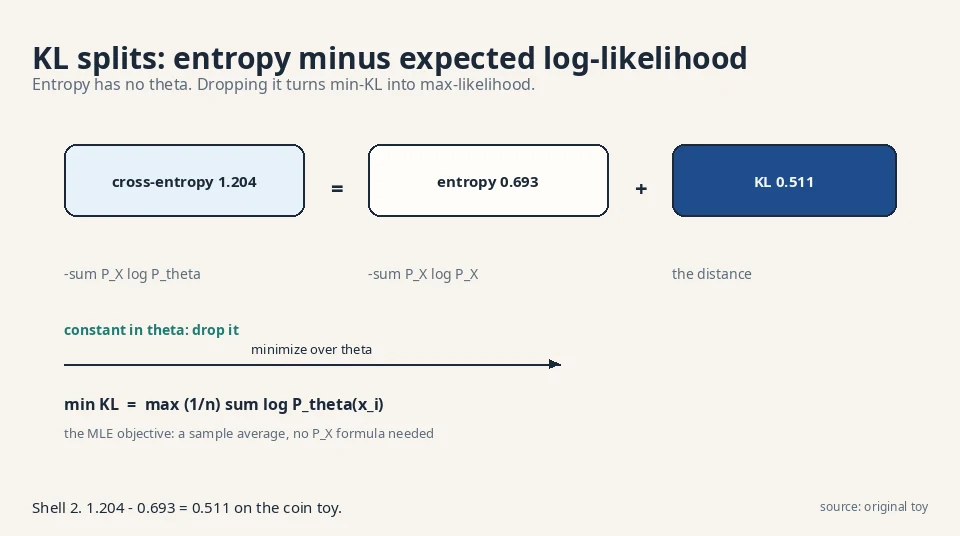
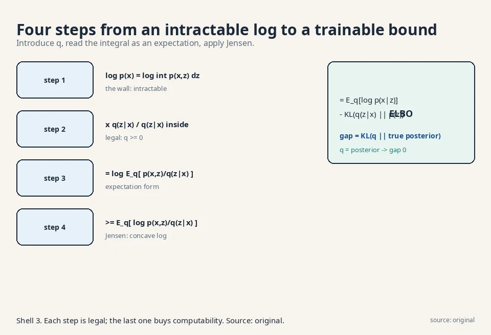
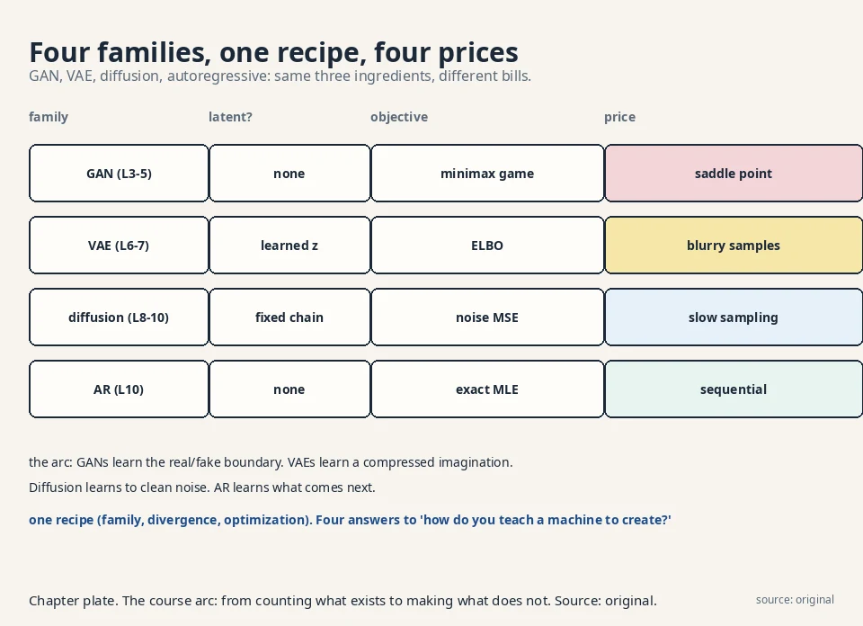

MATH-GENAI Crash Course
How to use this page
Read the arc once for the story. Memorize the numbers table: every exam question in this course is a number with a story around it. Then drill the self-test until every answer is instant. The traps section lists the exact mistakes the exam rewards.
The fifteen-minute arc
The job (L01). We have samples from an unknown distribution P_X. We want new samples. The recipe: pick a parametric family P_θ, choose a divergence D(P_X, P_θ), turn θ to shrink it. Memorization fails: it assigns zero probability to everything unseen. The push-forward trick (noise z through a network g_θ) gives samples with no density formula.
The ruler (L02). KL divergence: Σ P_X log(P_X/P_θ), the average log surprise ratio. Coin toy: 0.511 nats. Exact match scores 0. Forward KL (weight by truth) is mode-covering. reverse is mode-seeking. The identity: min KL = max likelihood. Training is (1/n)Σ log P_θ(x_i).
The family (L03). KL is one f-divergence of many: JS (0.102, symmetric, saturates), TV (0.4, simple, kinked). The variational bound measures divergence from samples alone: max over critics of E[T(x)] − E[f*(T(x̂))]. The GAN objective falls out of one choice of f.
The game (L04). D maximizes, G minimizes E[log D(x)] + E[log(1−D(G(z)))]. Hand trace works. Two failures: saturation (at D = 0.001, doubling the score moves the loss 0.001. The non-saturating variant moves it 0.693) and mode collapse (JS 0.216 with half the distribution missing).
The fixes (L05). Wasserstein distance = earth-moving cost: W = |θ|, gradient 1 everywhere, no saturation. WGAN: raw critic scores with a 1-Lipschitz speed limit. FID judges without likelihood: Fréchet distance between Inception-feature Gaussians (toy: 4).
The hidden causes (L06). Data comes from hidden z: p_θ(x) = ∫ p_θ(x,z)dz. The log of the integral is intractable, so Jensen builds a floor: ELBO = E_q[log p_θ(x,z)/q(z|x)]. Gap = KL(q‖true posterior), exactly 0.063 in the hand toy. EM is the exact-posterior special case.
The autoencoder (L07). q becomes an encoder network. Sampling blocks backprop. The reparameterization trick (z = μ + σε) moves randomness to ε. KL rent: 0.443 nats in the toy. Posterior collapse (KL → 0, latents dead) is the failure. β-VAE and VQ-VAE are the variants.
The destruction (L08). Fix the encoder to pure noising: x_t = √α_t x_{t−1} + √(1−α_t)ε_t. Toy: 4.0 → 4.111 → 3.900. Jump anywhere: x_t = √ᾱ_t x_0 + √(1−ᾱ_t)ε. End of chain: pure N(0,1). Learn only the reverse: small denoising steps.
The simplification (L09). Condition on known x_0: tractable posterior (mean 3.944 in the toy). Gaussian KL = squared error. Reparameterize through noise: the whole ELBO becomes L_simple = ‖ε − ε_θ‖² (0.0354 in the toy). Sampling walks the chain backward (3.9 → 4.059).
The views (L10). Noise prediction is score prediction (−1.578 in the toy): walk uphill on probability. DDIM strides skip steps (x_100 = 1.5 → x_50 = 2.844 in one jump). Guidance steers with a classifier (−0.578). Latent diffusion shrinks 48×. Autoregressive models factor with the chain rule (p(a,b,a) = 0.036): exact likelihood, sequential sampling.
The numbers you must know cold
Every number below is a worked toy from the lessons. Each one proves exactly one claim.
| Number | Toy | What it proves |
|---|---|---|
| 0.511 | KL, coin {0.5,0.5} vs {0.9,0.1} | KL is 0 iff distributions match |
| 0.693 | Forward KL, sharp toy; also JS max = log 2 | Asymmetry: reverse KL on the same toy is ∞ |
| 0.102 | JS on the coin toy | JS is calmer than KL; saturates when far apart |
| 0.4 | TV on the coin toy | Simplest divergence; kinked gradient |
| −1.918 vs −2.079 | MLE on H,H,T | min KL = max likelihood; data picks the 0.7 coin |
| 0.001 vs 0.693 | Saturation fix | Non-saturating loss gives 700× the signal at d ≈ 0 |
| 0.216 | Mode collapse JS | The objective shrugs at a missing half |
| 4 | FID toy | Mean shift of 2 → FID 4; lower is better |
| −1.031 vs −0.968 | ELBO toy | Lower bound sits below truth; gap 0.063 = KL exactly |
| 0.443 | VAE KL rent | Closed-form Gaussian KL; rent for μ=0.5, σ²=0.25 |
| 3.900 | Forward chain toy | x_0=4.0 → x_2=3.900; closed form agrees to the digit |
| 3.944 | Posterior mean toy | Conditioned reverse sits between noisy and clean |
| 0.0354 | L_simple toy | The whole ELBO becomes one MSE |
| 4.059 | One reverse step | 3.9 → 4.059: toward clean 4.0 plus wobble |
| −1.578 | Score toy | Arrow at 3.9 points left with strength 1.578 |
| 2.844 | DDIM stride | x_100=1.5 → x_50=2.844 in one jump via x̂_0=3.221 |
| 48× | Latent diffusion | 786,432 → 16,384 numbers per step |
| 0.036 | AR toy | p(a,b,a) = 0.6·0.3·0.2; chain rule, exact likelihood |
The four plates that carry the course
1. KL splits into entropy plus the MLE objective. The entropy never moves when you turn θ. Drop it and min-KL becomes max-likelihood. This is why the field trains on cross-entropy.

2. Jensen builds the ELBO in four legal steps. Each step is exact. The last one trades the intractable log for a computable expectation. The gap is always a KL.

3. Three algebraic moves turn the DDPM ELBO into one MSE. Condition on x_0, reduce KL to squared error, predict the noise. The price is the reweighting: samples over likelihood.

4. Four families, one recipe, four prices. If the exam asks “compare the families”, this plate is the answer.

Memory aids
Mnemonics
- FDO: Family, Divergence, Optimization. The recipe. Every model is three choices. Name all three before you analyze anything.
- “The log of an expectation is not the expectation of a log.” The sentence that forces Jensen, ELBO, and the entire latent-variable road.
- “Weight by the truth.” Forward KL. Whenever you wonder which direction, ask what you have samples from: the truth. Weight by it.
- “The critic never frames an innocent model.” The variational bound never overclaims. A weak critic underreports. It never invents distance.
- “KL = 0 with good reconstructions is the corpse.” Posterior collapse. Watch the KL term, not the total loss.
- “Same weights, different walk.” DDIM reuses the trained ε_θ. The network never changes. Only the sampler does.
Never-confuse pairs
| Pair | The difference | The number |
|---|---|---|
| Forward vs reverse KL | Weight by truth (covers modes) vs weight by model (seeks one mode) | 0.693 vs ∞ |
| ELBO vs likelihood | ELBO is the floor; likelihood is the ceiling | −1.031 vs −0.968 |
| q vs posterior | q is your guess; posterior is the truth | Gap 0.063 = KL between them |
| DDPM vs DDIM | Same network, stochastic steps vs deterministic strides | 1000 steps vs 50 strides |
| Score vs noise | Same object, two costumes: score = −ε/√(1−ᾱ_t) | −1.578 vs 0.688 |
| FID vs likelihood | FID judges samples; likelihood scores densities | GANs have FID but no likelihood |
| Saturation vs mode collapse | Dead gradients at start vs dead diversity at the end | 0.001 vs 0.216 |
| β-VAE vs VQ-VAE | Continuous latents with extra KL rent vs discrete codebook | β dial vs K vectors |
If-this-then-that rules
- If the generator’s loss is flat at initialization, then switch to the non-saturating loss. Check the gradient at d ≈ 0, not at the solution.
- If samples lack diversity but the loss looks fine, then suspect mode collapse. Cluster the samples and compare against clustered real data.
- If the VAE’s KL is glued to zero, then the latents are dead. Weaken the decoder or anneal the KL weight.
- If the DDPM is noisy at low t, then the schedule is too fast. Plot the signal fraction curve.
- If FID is good but samples look like copies, then it is memorization. FID cannot catch it. Check nearest-neighbor distances.
- If guided samples are caricatures, then the guidance scale is too high. Lower s.
- If the loss varies wildly across t, then plot it per noise level. The mean hides per-t failures.
- If you need the density, then you cannot use a GAN generator. Pick VAE, diffusion, or AR.
Exam traps
- “KL is symmetric.” No. 0.693 forward, infinite reverse on the sharp toy. Direction chooses the personality.
- “Minimizing cross-entropy differs from maximizing likelihood.” They are the same search. Cross-entropy = entropy + KL. Entropy has no θ.
- “The variational bound equals the divergence.” It lower-bounds it. A weak critic underestimates.
- “The GAN paper derived its loss from f-divergences.” No. The f-GAN view came later (2016). The original paper motivated the game directly.
- “L_simple is the true ELBO.” It is reweighted. Slightly worse likelihood, much better samples.
- “DDIM needs retraining.” No. Same ε_θ, different walk. Training used only the marginals.
- “Low FID proves generation.” No. Memorization scores ~0. FID is a judge, not a proof.
- “Posterior collapse means high loss.” The opposite: KL → 0 makes the loss look great while the latents die.
Rapid-fire self-test
Q1. Truth {0.5, 0.5}, model {0.9, 0.1}. KL? A. 0.511 nats. Tails term dominates: 0.5·log 5.
Q2. Why is KL not symmetric? A. Weights come from the first distribution. Sharp toy: forward 0.693, reverse ∞.
Q3. min KL = max what? A. Likelihood: (1/n)Σ log P_θ(x_i). Entropy drops out (no θ).
Q4. JS on the coin toy, and its weakness? A. 0.102. Symmetric and calm, but saturates when distributions barely overlap.
Q5. The variational bound in one line? A. D_f = max_T E[T(x)] − E[f*(T(x̂))]. Samples only, no densities. A bound, not the value.
Q6. The GAN objective, and who optimizes which way? A. J = E[log D(x)] + E[log(1−D(G(z)))]. D maximizes, G minimizes.
Q7. At D(G(z)) = 0.001, doubling the score moves the original loss by how much? The fix? A. 0.001 (saturation). Non-saturating −log D moves 0.693: 700× the signal.
Q8. Mode collapse: truth {0:.5, 10:.5}, model {0:1}. JS? A. 0.216. The divergence barely objects. The generator sits at loss 0.693 forever.
Q9. JS on point masses at 0 and θ=10 vs θ=100? A. 0.693 both. Gradient zero. Wasserstein gives 10 vs 100, gradient 1.
Q10. WGAN objective and the constraint? A. J = E[f(x)] − E[f(x̂)], f 1-Lipschitz. No logs, no sigmoid.
Q11. FID formula and the toy value? A. ‖μ−μ̂‖² + Tr(Σ+Σ̂−2(ΣΣ̂)^{1/2}). Toy: 4, all from the mean shift.
Q12. Why Jensen? State the key sentence. A. The log of an expectation is not the expectation of a log. Jensen turns log E_q into E_q log: a computable lower bound.
Q13. ELBO toy: values and gap? A. ELBO −1.031, truth −0.968, gap 0.063 = KL(q‖posterior) exactly.
Q14. EM in one line? A. Coordinate ascent on the ELBO with the exact posterior: E-step closes the gap, M-step pushes the floor. Likelihood never decreases.
Q15. The reparameterization trick? A. z = μ + σ·ε, ε ~ N(0,1). Same N(μ,σ²), gradients flow: ∂z/∂μ = 1, ∂z/∂σ = ε.
Q16. VAE KL rent for μ=0.5, σ²=0.25? A. 0.443 nats, by −½(1 + log σ² − μ² − σ²).
Q17. Posterior collapse: symptom and fix? A. KL → 0 with good reconstructions: dead latents. Fix: weaker decoder, anneal KL weight 0→1, β-VAE, VQ-VAE.
Q18. Forward process and the closed-form jump? A. x_t = √α_t x_{t−1} + √(1−α_t)ε_t. Jump: x_t = √ᾱ_t x_0 + √(1−ᾱ_t)ε. Toy: 4.0 → 3.900, verified to the digit.
Q19. The three moves from ELBO to L_simple? A. Condition on x_0 (tractable posterior, mean 3.944). Gaussian KL = squared error. Predict the noise: L_simple = ‖ε−ε_θ‖² = 0.0354.
Q20. Score, DDIM, guidance, latent, AR: one number each? A. Score −1.578 at x=3.9. DDIM: 1.5 → 2.844 in one stride. Guidance: −1.578 + 2·0.5 = −0.578. Latent: 48× cheaper. AR: p(a,b,a) = 0.036.
The one table
| Family | Objective | Price |
|---|---|---|
| GAN | Minimax game | Saturation, mode collapse |
| VAE | ELBO | Blurry samples |
| Diffusion | Noise MSE | Slow sampling |
| Autoregressive | Exact MLE | Sequential generation |
Four answers to “how do you teach a machine to create?”, each with its bill attached. For the full story with every number worked by hand, read the lessons in order.